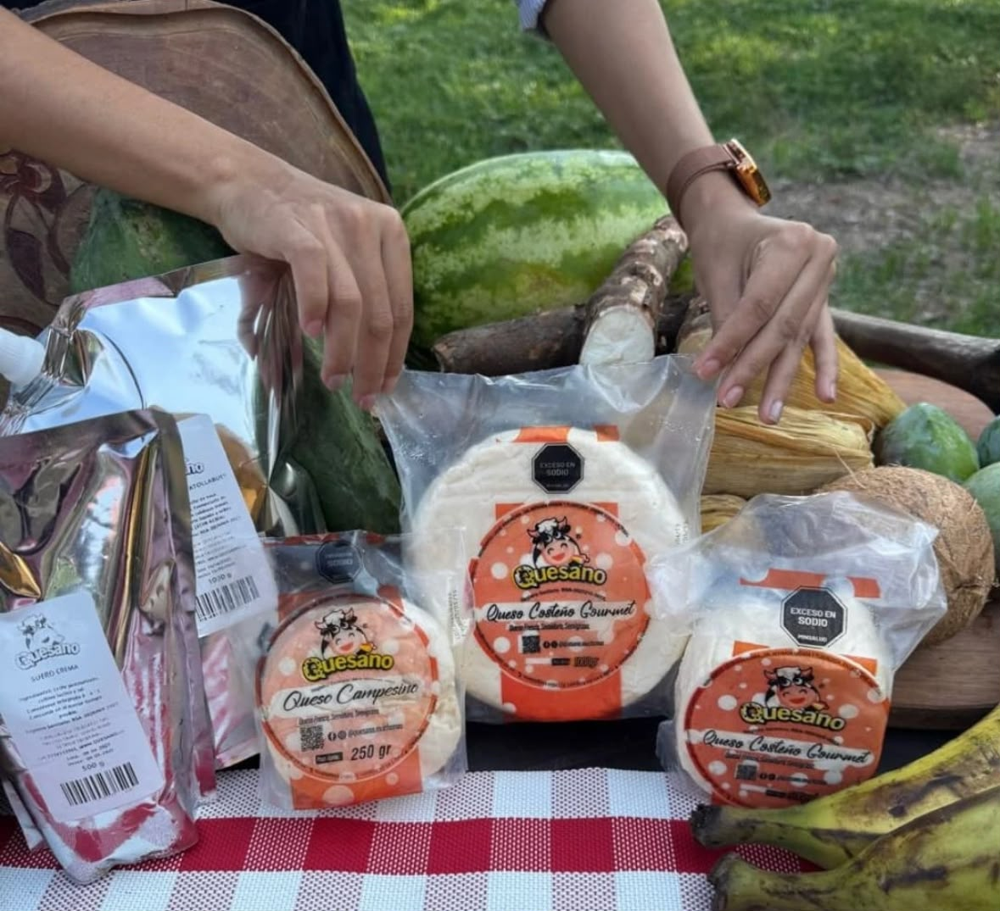
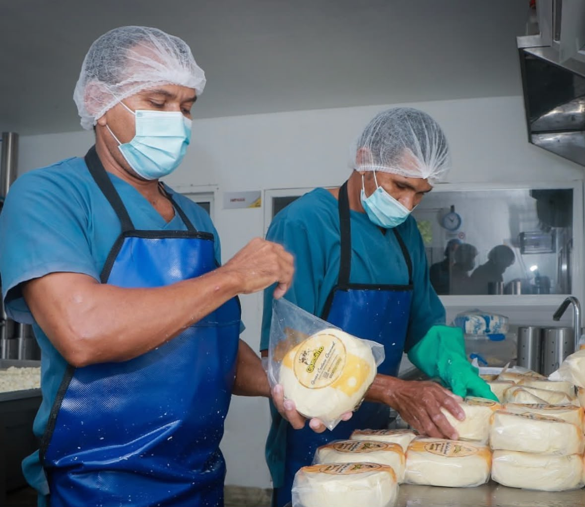

Una idea que toma forma
La empresa sitúa sus inicios en 2014, vinculada a la producción de lácteos y, especialmente, de quesos artesanales.

Queso costeño artesanal en tres sabores: tradicional, con ají y con finas hierbas.
En 2014 comenzó el camino de QUESANO en Ariguaní, Magdalena. Con el impulso de la fe y el apoyo de empresarios ganaderos, nació con una idea sencilla: transformar la tradición láctea en quesos artesanales para compartir.
La empresa sitúa sus inicios en 2014, vinculada a la producción de lácteos y, especialmente, de quesos artesanales.
Desde el Caribe colombiano, QUESANO pone en el centro el trabajo con productos lácteos y la tradición de sus quesos.
En esta propuesta, el sabor costeño se encuentra con Boyacá: una identidad que honra sus raíces y se acompaña de leche de Ventaquemada.
La empresa reconoce públicamente el trabajo de su equipo. Ver publicación de QUESANO en Instagram ↗ · Perfil público de QUESANO en Facebook ↗
España es el primer mercado estratégico de QUESANO: su comunidad latinoamericana y sus tiendas especializadas ofrecen una oportunidad para dar a conocer el queso costeño colombiano.
La expansión priorizará:
El análisis de comercio internacional, incluido Trade Map, ayudará a orientar la selección de mercados y posibles clientes.
Llevar el auténtico sabor del queso costeño colombiano a nuevos mercados, conservando nuestra tradición y construyendo oportunidades de crecimiento para la industria láctea colombiana.
QUESANO combina una preparación inspirada en la tradición caribeña con leche fresca de Ventaquemada.
Queso costeño artesanal de textura firme, elaborado con leche fresca de productores locales.
Facilita elegir y pedir queso costeño en Boyacá, con información clara sobre sus variedades y presentación.
Elige una variedad, agrégala a tu pedido y confirma los detalles directamente por WhatsApp.
Tradicional, con ají o finas hierbas; cada presentación es de 500 g y sellada al vacío, lista para compartir en tus comidas.
Desde Ariguaní, Magdalena trajimos el secreto de la preparación costeña y lo combinamos con la pureza de la leche de Boyacá.

Proveniente de ganaderos de Ventaquemada, garantizando la mayor frescura en cada bloque.
Firme, con el punto ideal de sal para tus arepas, desayunos, patacones y recetas.
Conservación optima con cadena de frío para mantener su textura y aroma intactos.
Elige tu favorita o arma tu combo con las tres variedades en empaques de 500 g sellados al vacío.
El precio es una referencia para esta propuesta académica; la disponibilidad y el valor final se confirman al hacer el pedido.
Precio de referencia por cada unidad de 500 g. No se anuncian descuentos ni tarifas por volumen.
Selecciona una variedad y coordina tu pedido directamente por WhatsApp, sujeto a disponibilidad.
La propuesta se sostiene mediante la venta directa de presentaciones de queso. Los costos y el precio final deben validarse antes de ofrecerlos comercialmente.
QUESANO es un emprendimiento de producción y comercialización de queso costeño artesanal. Unimos la herencia cultural del Caribe con la riqueza del campo boyacense.
Una alternativa artesanal, fácil de conocer y pedir, que conecta sabores del Caribe con productores de Boyacá.
Queso costeño artesanal en tres variedades, con presentación de 500 g y pedido directo.
Une una preparación inspirada en la tradición caribeña con leche fresca de Ventaquemada.
Ayuda a comparar las variedades y coordinar la compra en un solo lugar, sin pasos de pago dentro de la página.
La propuesta prioriza el trabajo con productores locales. También declara compromisos de uso eficiente del agua, aprovechamiento del suero y reciclaje; son metas del proyecto, no certificaciones.
Trabajamos de la mano con productores locales para ofrecerte queso costeño artesanal con los más altos estándares de calidad.
Acopio directo en Ventaquemada, Boyacá.
Cuajo y la cantidad precisa de sal tradicional.
Obtenemos la textura firme característica del queso costeño.
Listo para despacho con refrigeración garantizada.
Ofrecemos atención tanto para consumo familiar como ventas al por mayor.
Completa los detalles y generaremos tu mensaje personalizado directo a nuestro canal oficial de WhatsApp.
Nos preocupamos por el medio ambiente y el bienestar de nuestra región.
Compromiso del proyecto: procurar optimizar el uso del agua en los procesos de lavado e higiene.
Compromiso del proyecto: buscar alternativas de aprovechamiento del lactosuero.
Compromiso del proyecto: separar los residuos desde su origen.
La propuesta busca ajustar la producción a los pedidos para reducir desperdicios.
El formulario prepara un mensaje con los datos que escribes. Tú decides si continúas a WhatsApp y lo envías; la página no tiene un sistema propio para guardar pedidos.
Solicitar solo información necesaria; usarla para atender solicitudes relacionadas con QUESANO y no compartirla sin autorización previa.
Uso inadecuado o divulgación no autorizada de datos personales, como el nombre y la dirección completa incluidos en un mensaje.
Limitar los datos solicitados, restringir su acceso a integrantes autorizados del proyecto y pedir autorización antes de compartirlos.
Consulta las infografías en una vista separada, sin interrumpir el recorrido por la página principal.
Explora la estructura del modelo de negocio de Quesaño.
Ver Modelo Canvas ↗Consulta la guía visual del prototipo de producto para exportación.
Ver guía ↗Atendemos pedidos personales y alianzas comerciales con restaurantes, tiendas, cafeterías y distribuidores.
Escribir por WhatsApp ↗